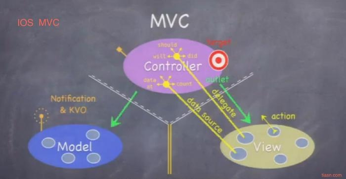
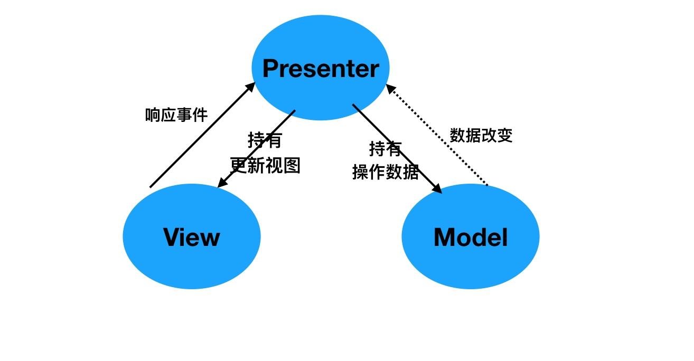
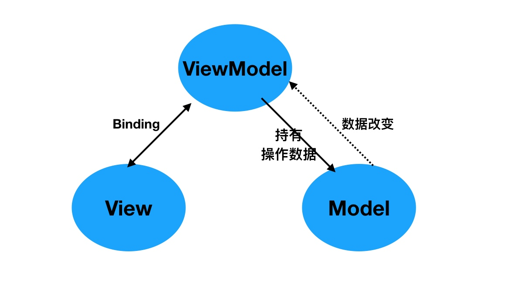

架构模式，也叫架构风格，一个架构模式描述软件系统里的基本的结构组织或纲要。架构模式提供一些呈先定义好的子系统，指定它们的责任，并给出把它们组织在一起的法则和指南。一个架构模式常常可以分解成很多个设计模式的联合使用。MVC模式就属于架构模式。
本文就 iOS 中使用 MVC、MVP、MVVM 架构模式表述个人见解。详细使用方法请参见 GitHub Demo
MVC
MVC 作为iOS开发中较为原始基本的架构模式，它把软件系统分为三个基本的部分：模型Model、视图View以及控制器Controller。这种模式的目的是为了实现一种动态的程序设计，简化后续对软件系统的修改和扩展，并使得程序的某一部分的复用成为可能。在此不做过多的解释，附图一张：

MVP
MVP 架构模式是 MVC 的一个变种，本人认为 MVC 与 MVP 两者之间最大的区别就是 MVP 中使用Presenter 对 View 和 Model 进行了解耦，View 中不会直接持有 Model 数据，之间的值传递都通过 Presenter 进行传递，换言之，Presenter 持有 View 和 Model，在其内部进行逻辑处理，并将处理后的结果直接传递给 View 显示。

- 当视图接收到来自用户的事件时，会将事件转交给 Presenter 进行处理
- 视图向外界暴露接口，当需要更新视图时， Presenter 通过视图暴露的接口更新视图的内容
- Presenter 持有模型并负责对模型进行操作和更新，在需要时取出其中存储的信息
- 当模型层改变时，可以将改变的信息发送给 Presenter
MVVM
MVVM有助于将图形用户界面的开发与业务逻辑或后端逻辑（数据模型）的开发分离开来。
使用 MVVM 架构模式开发的关键点在于 ViewModel 和 View 的双向绑定机制，View 的变动，自动反映在 ViewModel，反之，ViewModel 的改变能够通知到 View。

Demo 中采用绑定关系为，view 的改变通过调用 ViewModel 暴露的方法进行修改；ViewModel 的改变通过 KVO 监听来将变化的值传递给 View 进行展示。